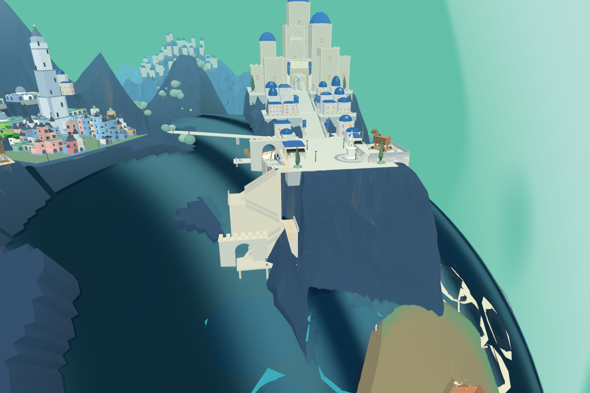
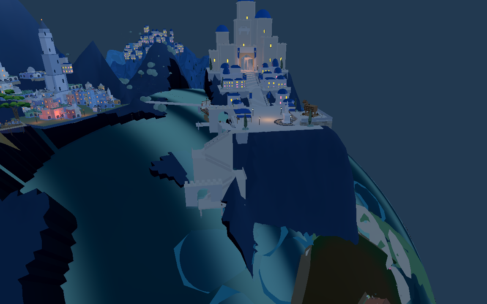

已接入8931原游戏并同步Godot。保留原后侧港口和船只引用；本批打通前侧步行入口，没有迁移舰队、卸货或攻城触发。


Godot圣城面板点击“前港登陆口”查看；点击“短剑兵 · 前港登陆到广场”执行携装通行。原游戏刷新8931后可见新通路。
Web主城、后港和前港合计路线支撑与阻挡采样通过；Godot使用认可的短剑兵，生产碰撞控制器完成322段移动，到达广场，装备几何检查837926次。仍是刚性腿跃步通行演练，不是最终步态或完整战斗。
三段各37级台阶，踏步高约0.179米、深约0.297米。门后转身平台和系船柱避让已按实际装备检查修正。山体整体比例、临水建筑细节与目标图仍有差距。
进入8931原游戏 · Web路线检查 · Godot实际士兵记录